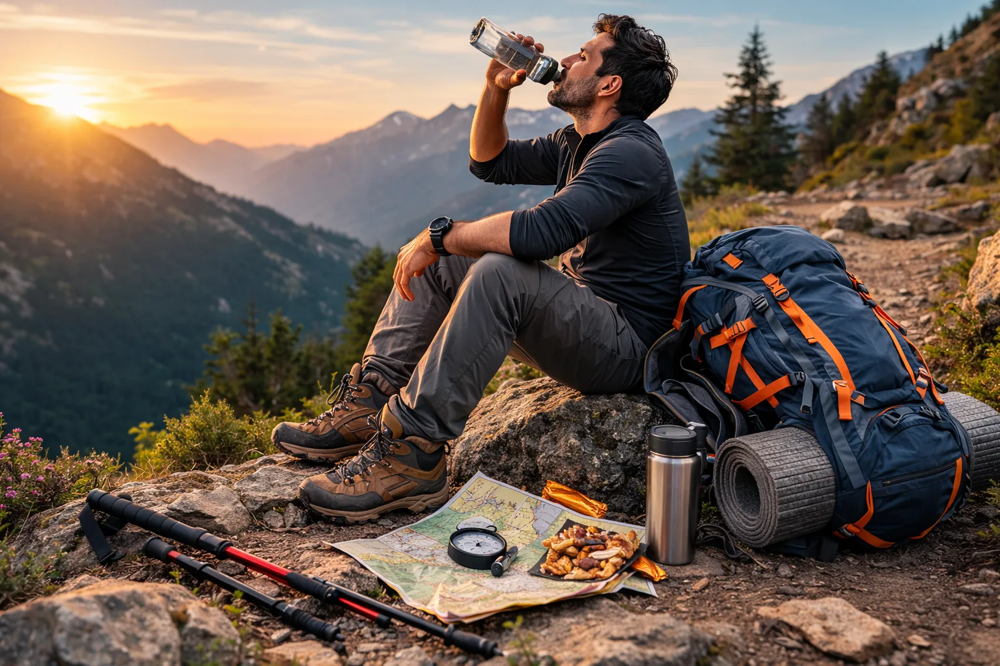

TREK SAFETY GUIDE
Feeling tired during a trek is normal, but proper pacing and preparation can help you manage your energy and enjoy the journey more comfortably.
Trek fatigue is something almost every trekker experiences at some point — especially during long climbs, hot weather, or multi-hour hikes. It’s that feeling when your legs begin to feel heavy, your energy drops, and every step suddenly feels harder than the last one.
Fatigue during trekking is completely normal. After all, trekking involves walking on uneven terrain, climbing slopes, carrying a backpack, and sometimes dealing with unpredictable weather. But the good news is that most trek fatigue can be prevented or reduced with the right approach.
Experienced trekkers rarely rely on strength alone. Instead, they focus on pace, hydration, energy management, and smart trekking habits. Learning how to manage your energy properly can make a huge difference in how enjoyable and comfortable your trek feels.
Whether you're doing a short hill trek or a long mountain trail, understanding how to avoid unnecessary exhaustion will help you enjoy the journey much more.
Many beginners assume that fatigue happens simply because trekking is physically demanding. While that’s partly true, the real reasons are often related to small mistakes made during the trek.
The good news is that most of these issues are easy to fix once you understand how to pace yourself on a trail. Small adjustments in your trekking habits can help you conserve energy and reduce fatigue significantly.

Managing your pace and energy is the key to avoiding trek fatigue.
One of the most common mistakes beginners make is starting a trek too quickly. When you're excited at the beginning of a trail, it's easy to walk faster than your body is comfortable with.
But trekking is not a race. The goal is to maintain a steady and comfortable pace that you can sustain for hours.
A good rule followed by experienced trekkers is simple: start slow, warm up your muscles, and gradually find your natural walking rhythm. If you feel slightly out of breath within the first 10–15 minutes, it usually means you're going too fast.
Walking at a steady pace helps your body conserve energy and prevents early fatigue.
Dehydration is one of the biggest causes of fatigue during trekking. Even mild dehydration can reduce energy levels, cause headaches, and make your muscles feel tired.
Staying hydrated helps your body regulate temperature, maintain stamina, and recover faster during breaks.
Your body burns a lot of energy during trekking, especially while climbing slopes. If you don’t replenish that energy, fatigue will build up quickly.
Instead of waiting until you're extremely hungry, it’s better to eat small snacks during short breaks. Foods that provide quick energy work best on treks.
Some popular trekking snacks include dry fruits, energy bars, bananas, peanut butter sandwiches, or trail mix. These foods are lightweight, easy to carry, and provide sustained energy.
Eating small portions every hour can help maintain your stamina and prevent sudden energy crashes.
Breaks are important during trekking, but taking them the right way matters. Instead of long, infrequent stops, it’s usually better to take shorter breaks more often.
For example, many trekkers follow a pattern of walking for about 30–40 minutes and then resting for a few minutes. This allows your muscles to recover without letting your body cool down too much.
During breaks, stretch your legs, drink water, and relax your breathing. Avoid sitting for very long periods because it can make restarting the trek harder.
Smart breaks help your body recover gradually while keeping your momentum on the trail.
The best way to avoid trek fatigue is to treat trekking as a journey, not a challenge to rush through. Maintain a steady pace, stay hydrated, snack regularly, and listen to your body. When you manage your energy wisely, even long treks start to feel enjoyable rather than exhausting.
Join the Mototrek community and explore beautiful trails with experienced trek leaders.
VIEW UPCOMING TREKS